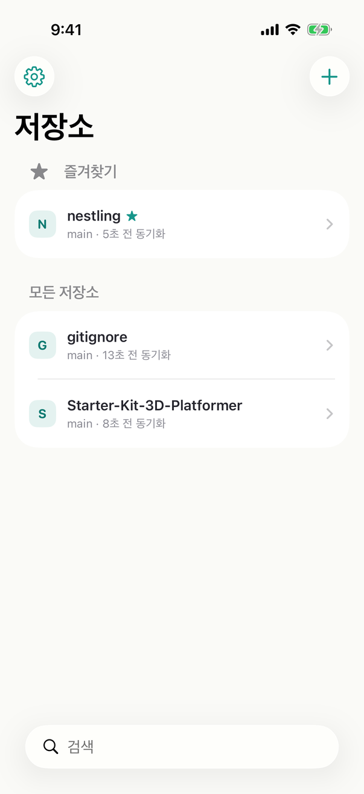

iOS에서 Git의 모든 기능을, 무료로.

베타 빌드입니다. 유일한 사본인 저장소는 넣지 마세요. 앱은 아무것도 수집하지 않고, 문제 보고 번들에도 저장소 이름·경로·내용은 들어가지 않습니다. 개인정보 정책
다른 앱과 함께 사용
Files 앱을 통해 파일을 편집하고 Roost에서 변경 내용을 커밋합니다. 저장소가 파일 앱에 폴더로 나타나므로 어떤 편집기든 그대로 씁니다.
파일을 한 곳에서 편하게
코드와 마크다운, Aseprite와 이미지, 3D 모델과 오디오, Godot 씬, HTML 페이지, PDF, JSON, CSV 표, 폰트를 앱을 옮겨 다니지 않고 저장소 안에서 봅니다. zip 목록도 열리고, Roost가 그리지 못하는 형식은 빠른 보기로 봅니다. 타일을 누르면 크게 볼 수 있습니다.
Git
- HTTPS 토큰 · SSH 키
GitHub·GitLab 로그인이나 개인 액세스 토큰으로 접속하고, SSH 키는 기기 안 Secure Enclave에 둘 수 있습니다.
- 저장소 목록에서 클론
GitHub·GitLab·Bitbucket·Gitea 계정의 저장소 목록에서 골라 클론합니다. 큰 저장소는 얕게 받을 수 있습니다.
- 브랜치 · 태그 · 스태시
브랜치를 만들고 옮기고, 태그를 푸시하고, 작업 중인 변경을 스태시에 넣었다 꺼냅니다.
- 머지 · 리베이스 · 충돌 해결
충돌은 전용 에디터에서 구간마다 어느 쪽을 쓸지 고르거나 직접 고쳐 해결합니다.
- 히스토리 그래프
커밋 히스토리에서 브랜치·머지·태그를 그래프로 보고, 파일 하나의 이력도 따라갑니다.
- diff
변경 내용을 한 줄로 이어 보거나 좌우로 나눠 보고, 이미지는 전후를 겹쳐 비교합니다.
보기 · 편집
- 코드 뷰어 · 편집기
20개 넘는 언어의 코드를 하이라이팅해 보고 편집합니다. 밖에서 바뀐 파일은 자동으로 다시 불러옵니다.
- 마크다운
마크다운을 렌더해 읽고, 할 일 체크박스는 탭으로 바로 표시합니다.
- 저장소 검색 · 심볼
파일 이름과 내용을 검색하고, 함수와 타입 선언으로 바로 이동합니다.
- 파일 앱 통합
저장소가 iOS 파일 앱에 폴더로 나타납니다. 파일 앱을 지원하는 앱에서 편집한 뒤 Roost에서 커밋합니다.
- 외부 폴더 연결
Logseq 같은 다른 앱의 폴더를 저장소로 연결하고 그 자리에서 커밋합니다.
게임 개발 파일
- Aseprite
Aseprite 파일을 애니메이션 재생, 레이어, 태그와 함께 미리 봅니다.
- 이미지 · 텍스처
PSD·TGA·DDS·KTX2·EXR 같은 텍스처를 열어 보고, 채널별로 확인합니다.
- 3D 모델
glTF·USDZ·FBX·OBJ 모델을 돌려 보고, 노멀과 UV를 확인합니다.
- 오디오 · 폰트
WAV와 Ogg Vorbis를 파형으로 보며 재생하고, 폰트를 미리 봅니다.
- Unity · Godot · 셰이더
Unity 프리팹과 Godot 씬의 구조를 읽고, GLSL·HLSL·GDScript를 하이라이팅해 봅니다.
플랫폼
- iPad
iPad에서는 3칼럼으로 작업하고, 키보드 단축키와 멀티 윈도우, Stage Manager를 씁니다.
- 단축어 · 위젯 · Spotlight
단축어로 받기·보내기·커밋을 자동화하고, 홈 화면 위젯과 Spotlight에서 저장소를 봅니다.
- 테마 · 언어
앱 컬러셋과 신택스 테마를 고르고, 다크 모드와 Dynamic Type을 따릅니다. 한국어·English·日本語.
- 개인정보
분석 도구나 추적이 없고, 별도의 Roost 계정도 없습니다. 문제 보고는 직접 보낼 때만 기기를 떠납니다.
앞으로 추가될 기능
- 서브모듈
- 게임 뷰어 확장
- 커밋 서명